Ist AI-generierter Inhalt gut für SEO?
Wann KI-Texte ranken — und wann sie eher schaden. Praxistipps zur Qualitätssicherung und zum Editorial-Workflow.
Beitrag lesenCEO · Unternehmer · Digitale Sichtbarkeit
Ich bin Sven Erxleben, CEO der Matrixe in Leipzig. Kein Einzelkämpfer, keine anonyme Agentur — ein eingespieltes Team aus Spezialisten, persönlich koordiniert. Direkt, messbar, ohne Agenturapparat.
SEO · SEA · KI-Suche · Web
Persönliche Marke · LinkedIn
Wissen teilen statt verstecken: Seit Jahren teile ich auf LinkedIn Klartext zu SEO, KI-Suche und B2B-Marketing — für Geschäftsführer, die Entscheidungen treffen müssen, nicht für den Algorithmus.
KI-Suche · AI Visibility
KI-basierte Suchsysteme verändern, wie Informationen gefunden, bewertet und empfohlen werden. Unternehmen, die nur klassisches SEO denken, verlieren schrittweise an Relevanz — oft nicht wegen schlechter Inhalte, sondern wegen fehlender Struktur, Klarheit und Prioritäten.
Sichtbarkeit endet heute nicht mehr bei Google.
Sechs Systeme, ein Prinzip: Wer dort empfohlen wird, wird gefunden. Wer fehlt, verliert Marktanteile, bevor klassische Rankings reagieren.
Technische Basis, Core Web Vitals, Informationsarchitektur, Content-Briefings und strukturierte Daten.
Such-, Shopping- und Remarketing-Kampagnen, Conversion-Tracking, Budgetsteuerung, Brand-Schutz.
Strategische Einordnung und Optimierungshebel für ChatGPT, Perplexity, Gemini & Co.
Redaktionspläne, Ghostwriting, Thought Leadership und Thought Leader Ads für Entscheider.
GA4, Consent-Setups, Conversion-Ziele, Dashboards und saubere Kanalbewertung statt Bauchgefühl.
WordPress, WooCommerce, modulare Landingpages, DSGVO-konforme und performante Setups.
Positionierung schärfen, Nutzen klar machen, Prioritäten und Zeitschiene für 0–12 Monate.
Marketing-Führung ohne Festanstellung. Koordination aller Kanäle, Dienstleister und interner Teams.
Strukturierter 1-Tages-Audit für Entscheider: 360°-Blick, Maßnahmen- & Entscheidungsplan, kein Upsell.
Vertrauen · Mittelstand & Industrie
Weitere Cases & Referenzen auf Anfrage — NDA-Projekte vertraulich.


Sichtbarkeit ist
kein Zufall.
Sie entsteht durch Strategie.
Sven Erxleben · CEO Matrixe
Über mich · Direkt mit dem Entscheider
CEO Matrixe · Externer Marketing-Lead für KMU
Unternehmer seit 1998, CEO der Matrixe in Leipzig. Angefangen mit Computer- und Netzwerkservice, seit 2005 durchgehend in Webentwicklung, SEO, SEA und heute KI-Suche. Ich arbeite mit einem eingespielten Team aus Spezialisten — und koordiniere persönlich. Kein Pitch-Deck ohne Substanz dahinter.
Direkter Austausch statt Agentur-Umwege.
Wer mit mir spricht, spricht mit dem Entscheider. Wer bucht, bekommt das Team.
Aktiv in SEO, SEA, KI-Suche und Webentwicklung
Aufbau und Führung internationaler Spezialisten-Teams
Follower auf LinkedIn — Wissen teilen, nicht verstecken
B2B, Industrie, Handel, Dienstleistung, E-Commerce
Leipzig · Sachsen — remote deutschlandweit
Stationen · 1998 → heute
Computer- und Netzwerkservice in Leipzig — mit angeschlossenem technischen An- und Verkauf.
Fokus auf Webentwicklung, SEO und SEA. Beginn der Kooperation mit Teams in Indien.
Branchenfokus Briefkastenanlagen und Metallbau. Langjährige Industrie-Projekte.
Langfristige Zusammenarbeit als Industriepartner — Entwicklung, Web und Marketing.
Ausbau von LinkedIn und Content mit klarer B2B-Themenführung für Entscheider.
Skalierbares, vollständig ausgelagertes Marketing-Team für KMU. Ergebnisse statt Overhead.
Prozess · Klar & pragmatisch
Drei Phasen, kein Berater-Theater. Wir starten mit dem größten Hebel und bauen aus, was wirkt.
Kurzcheck von Ist-Stand, Zielen und Ressourcen. Wir priorisieren die drei Maßnahmen mit dem größten Hebel.
Schnelle Sprints: Landingpages, Kampagnen, Tracking. Wöchentliche Abstimmung, klare Verantwortlichkeiten.
Was wirkt, bleibt und wird skaliert. Was nicht wirkt, fliegt. Simple Dashboards, regelmäßige Reviews.
Wöchentliche Syncs · klare Verantwortlichkeiten · monatlich anpassbar · transparente Reports
FAQ
SEA liefert in der Regel innerhalb von Tagen verwertbare Daten. SEO ist mittel- bis langfristig — meist 6–12 Wochen bis zu ersten sichtbaren Effekten, abhängig von Wettbewerb und Ausgangslage.
Ja. Ich arbeite als Sparringspartner für Geschäftsführung und Marketing, begleite interne Teams oder bestehende Agenturen — ohne Reibungsverluste.
Pragmatisch: Wir beginnen mit dem, was sinnvoll ist. Wichtig ist ein Mindestbudget für Ads und Content, damit Tests statistisch belastbar sind.
Nein. Zusammenarbeit soll über Ergebnisse funktionieren, nicht über Laufzeiten. Transparente Abrechnung, klare Ziele.
Wann KI-Texte ranken — und wann sie eher schaden. Praxistipps zur Qualitätssicherung und zum Editorial-Workflow.
Beitrag lesenDie wichtigsten Hebel für Shopify, WooCommerce & Co. — Kategorie-Strukturen, Filter-Indexierung und Conversion.
Beitrag lesenWelche Kennzahlen für Praxen wirklich zählen — von Google Business Profile bis Buchungsanfragen.
Beitrag lesenKontakt · Kein Sales-Gespräch
Zwanzig Minuten, um zu klären ob und wie ich helfen kann — direkt mit dem Entscheider. Antwort werktags in der Regel innerhalb von 24 Stunden, persönlich und ohne Autoresponder.
Karl-Liebknechtstraße 96
04275 Leipzig